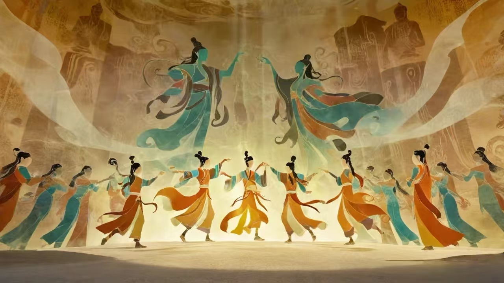
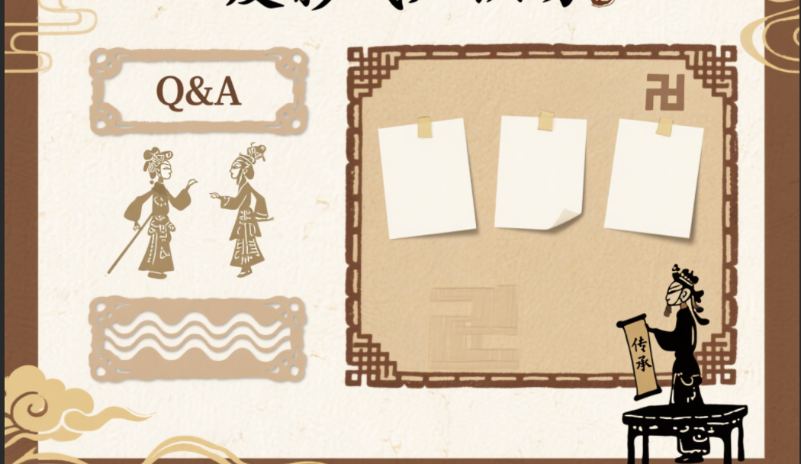

传承千年光影艺术，弘扬传统文化精髓

测试一下你对湖湘皮影戏的了解程度吧！
恭喜你答对了！
湖湘皮影戏最常用的制作材料是黄牛皮，经过浸泡、刮削、晾晒等多道工序处理后，制成透明的皮料，再进行雕刻和彩绘。
你的答案是错误的。
正确答案是：黄牛皮。湖湘皮影戏最常用的制作材料是黄牛皮，经过浸泡、刮削、晾晒等多道工序处理后，制成透明的皮料，再进行雕刻和彩绘。
感谢你参与湖湘皮影戏知识问答，希望你对湖湘皮影戏有了更深入的了解。